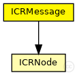
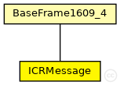

This documentation is released under the Creative Commons license
This documentation is released under the Creative Commons license(no description)
The following diagram shows usage relationships between types. Unresolved types are missing from the diagram. Click here to see the full picture.
The following diagram shows inheritance relationships for this type. Unresolved types are missing from the diagram. Click here to see the full picture.
| Name | Type | Description |
|---|---|---|
| BaseFrame1609_4 | packet | (no description) |
| Name | Type | Description |
|---|---|---|
| numMsg | unsigned long |
number of message |
| msgType | int |
message type |
| msgLifeTime | simtime_t |
message life time - 16 bits |
| validityDataTimeStamp | simtime_t |
validity timeout of the menor neighborhood condition of the route nodes |
| confidence | double | |
| hopNumber | unsigned int | |
| msgTimeStamp | simtime_t |
timestamp da mensagem |
| sourceNode | ICRNode | |
| transmissorNode | ICRNode | |
| nextNode | ICRNode | |
| destinyNode | ICRNode | |
| channelNumber | int |
Channel Number on which this packet was sent |
| userPriority | int |
User priority with which this packet was sent (note the AC mapping rules in Mac1609_4::mapUserPriority) |
| psid | int |
Unique number to identify the service |
| recipientAddress | LAddress::L2Type |
Recipient of frame (-1 for any) |
class ICRMessage extends BaseFrame1609_4 { unsigned long numMsg; // number of message int msgType; // message type simtime_t msgLifeTime; // message life time - 16 bits simtime_t validityDataTimeStamp; // validity timeout of the menor neighborhood condition of the route nodes double confidence; unsigned int hopNumber; simtime_t msgTimeStamp = 0; // timestamp da mensagem ICRNode sourceNode; ICRNode transmissorNode; ICRNode nextNode; ICRNode destinyNode; }
This documentation is released under the Creative Commons license